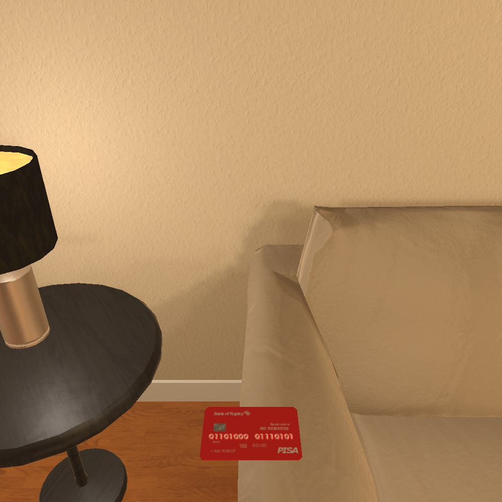

---------------------------------------------------------task: 7---------------------------------------------------------
--------------------------------------------------------------------------------------------------------------------------------------------------------------------
--------------------------------------------------------------------------------------------------------------------------------------------------------------------
Step:--------------------------------------------------------------------------6-------------------------------------------------------------------------------
----------------------------------------
VLM Prompt:
Image1:
Image2:
Image3:
**Instruction**
1. Analyze the provided images to identify all visible household objects and compare the difference between images (e.h. whether the object is opened or not and taken on hand or not), focusing on those relevant to the task description "put a creditcard in coffeetable."
2. Use the analysis of images and the task hint "The agent must find an object of the desired type, pick it up, find the correct location to place it, and put it down there." to answer the question: what is the most reasonable action in the choices for the task description "put a creditcard in coffeetable"?
3. Decide and write the answer using the template: The answer is: (i): , where i is the real number. If there is no desired object in images, search every place based on **Initial Observation** to find the object. And if no one is exactly correct, choose a similar answer.
**Initial Observation**
You are in the middle of a room. Looking quickly around you, you can see armchair (1-2), dresser (1), garbagecan (1), cabinet (1-4), drawer (1-4), coffeetable (1), sidetable (1), sofa (1)
**Answer Choices**
(1): go to armchair 1
(2): go to armchair 2
(3): go to dresser 1
(4): go to garbagecan 1
(5): go to cabinet 1
(6): go to drawer 1
(7): go to drawer 2
(8): go to cabinet 2
(9): go to drawer 3
(10): go to cabinet 3
(11): go to drawer 4
(12): go to cabinet 4
(13): go to coffeetable 1
(14): go to sofa 1
(15): put creditcard 2 in/on sidetable 1
(16): examine creditcard 2
(17): examine sidetable 1
**Answer**
Let's think step by step by following the instructions.
----------------------------------------
----------------------------------------
Original Response:
1. In all three images, we can see a sidetable with a lamp on it and a part of what appears to be an armchair. In Image 3, we can see a credit card placed on the sidetable, which is not present in Image 1 and Image 2. This indicates that the action of placing the credit card on the sidetable has been completed between the second and third images.
2. Based on the task hint, the agent must find a credit card, pick it up, and then put it on the coffeetable. Given that we can already see the credit card on the sidetable in Image 3, the most reasonable action to fulfill the task description "put a creditcard in coffeetable" would be to take the credit card from the sidetable and then place it on the coffeetable.
3. The answer is: (16): examine creditcard 2, to ensure it is the correct object to pick up, followed by taking it and placing it on the coffeetable. Since there is no specific action listed for picking up the credit card and then placing it on the coffeetable, examining the credit card would be the first step in completing the task.
----------------------------------------
----------------------------------------
>>> Refine Original VLM Response and Get Pure Action: examine creditcard 2, to ensure it is the correct object to pick up, followed by taking it and placing it on the coffeetable
----------------------------------------
-----------------------------------------------------------------
Running time: 10.512101888656616 seconds
Total Money: 3.0898400000000006
-----------------------------------------------------------------
-----------------------------------------------------------------
Text Observation:Nothing happens.
-----------------------------------------------------------------
UNSUCCEED